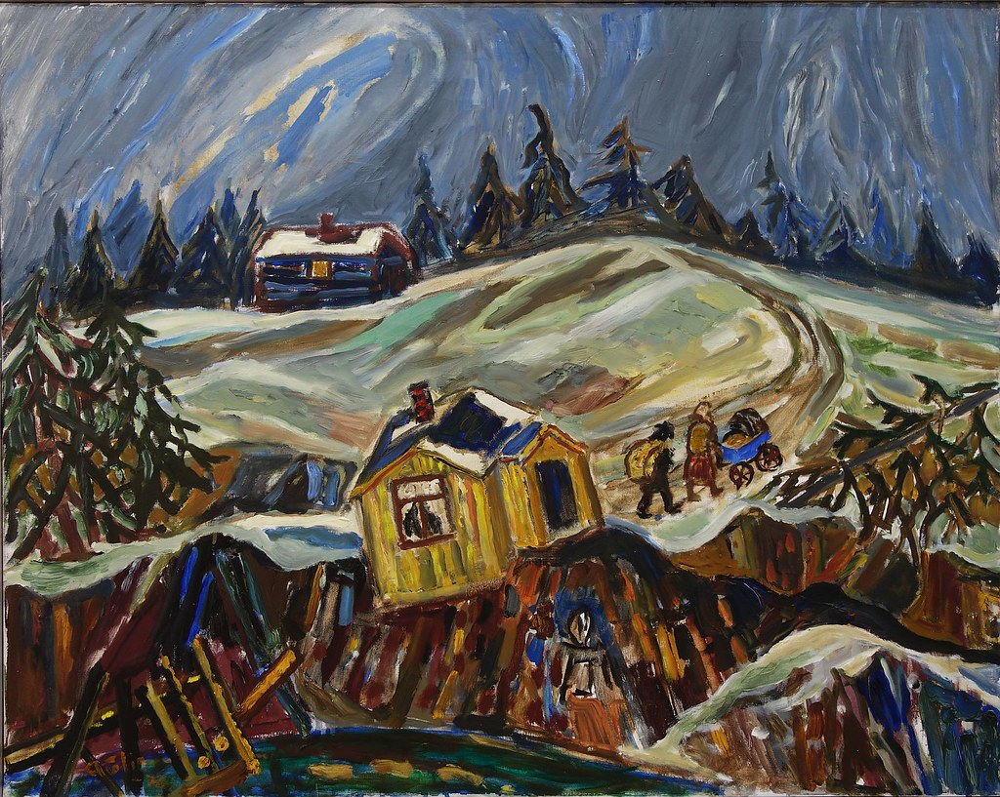
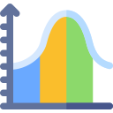
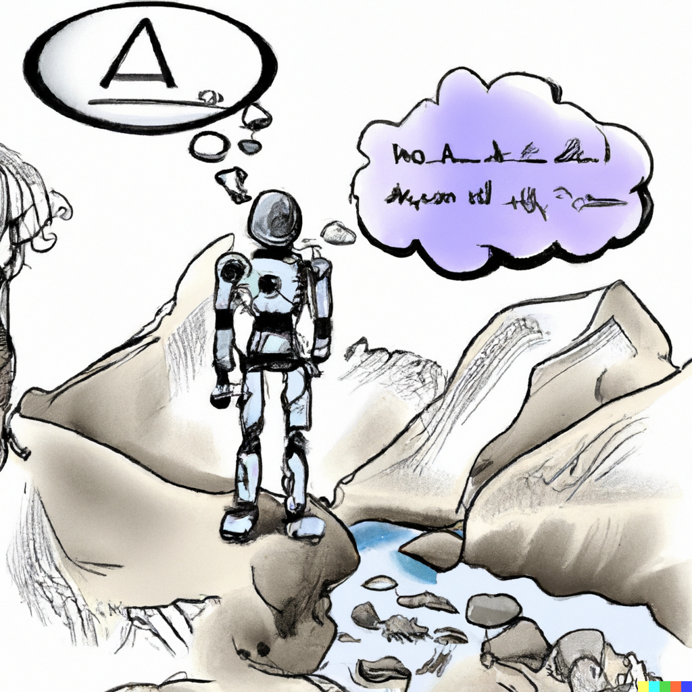

Where technology of future meets the science of past!

Remote Sensing
Artificial Intelligence

Geo- Statstics
Geo-morphology
Geo-Physics
Climate Change
What We Do?
Mapping
We map past natural hazards using various AI and non-AI based techniques to monitor spatio-temporal dynamics of earth surface processes.
Understanding
We use geospatial solutions and exploratory analyses to understand why past natural hazards occurred, evolved and ultimately caused damage.
Predicting
We develop, implement and share data-driven models to predict future natural hazards and associated risk.
Fundamental Research Questions
We ask ourselves how to build a new generation of early warning systems for natural hazards. We envision their numerical solutions to be capable of flexibly adapt to climate extremes while maintaining a level of spatial and temporal detail suitable to inform communities under threat.
In the context of compound hazards cascading from an earthquake occurrence, we want to know whether it is possible to build near-real-time predictive models who’s output can be readily available within few hours from the rupture.
We look for space-time joint probability models able to estimate where and when natural hazard may occur as well as the potential magnitude and losses they may lead to. All this objectives are linked by a common thread, which is making these tool freely and openly accessible to anyone.

Current Research
To fulfil our objectives, we primarily make use of data-driven tools. These may feature state-of-the-art statistical solutions, often framed in a Bayesian context (via INLA: https://www.r-inla.org/) to include uncertainty estimation in every analytical protocol. Outside the use of statistics, we explore deep learning architectures, trading interpretability and uncertainty in favor of model performance. Recently, we are also tapping into the realm of interpretable AI, to find a balance between the interpretability typical of statistical modeling and the higher performance typical of deep learning. We also welcome physics-based models mainly in the context of hydro-morphological hazards. In this sense, we mainly rely on LISEM (https://lisemmodel.com/) to holistically examine multi-hazard interactions and quantify hazard and risk as a result.
Our ambition for the years to come is to convert our solutions into platforms that can be of use to a large audience. We have already started working towards translating our software into plugins for common GIS platforms
Novel Methods
We also aim to keep updating the science and scientific methods in geoscience using AI methods to further understand and predict the natural hazards as well as fundamental geoscientific questions.